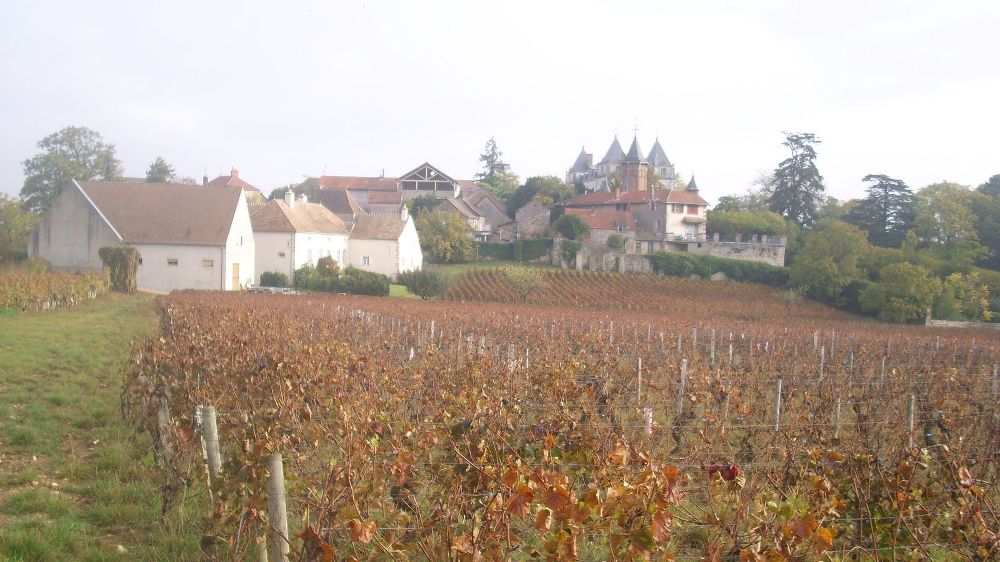
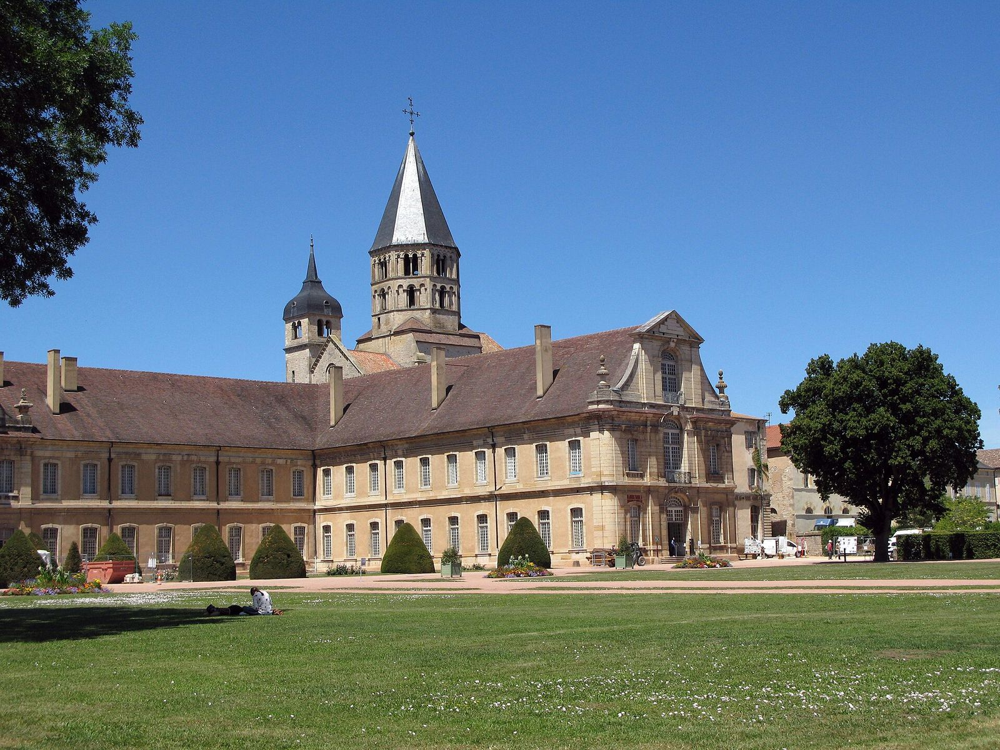
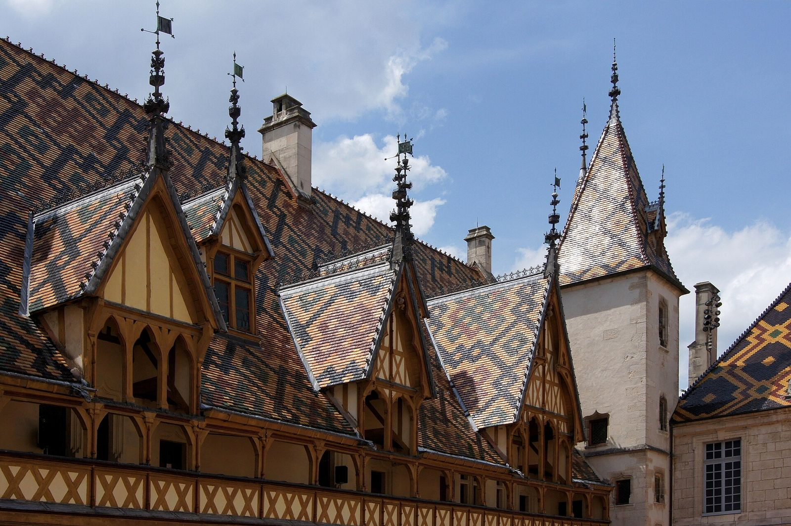
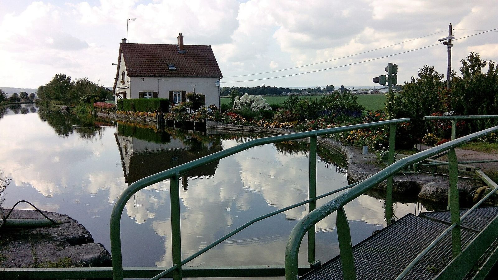
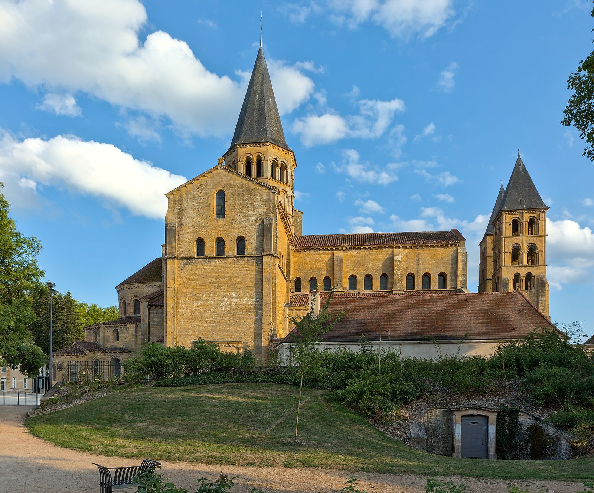
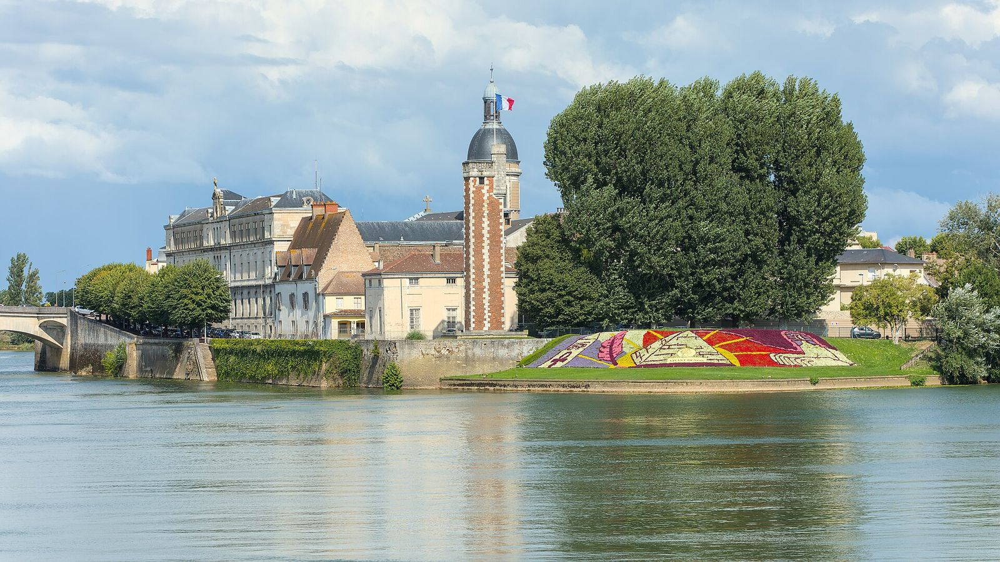
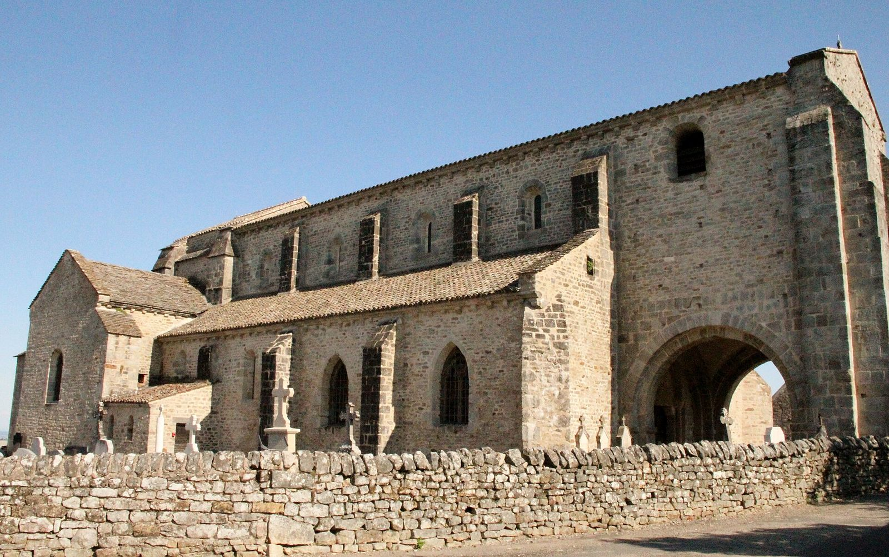
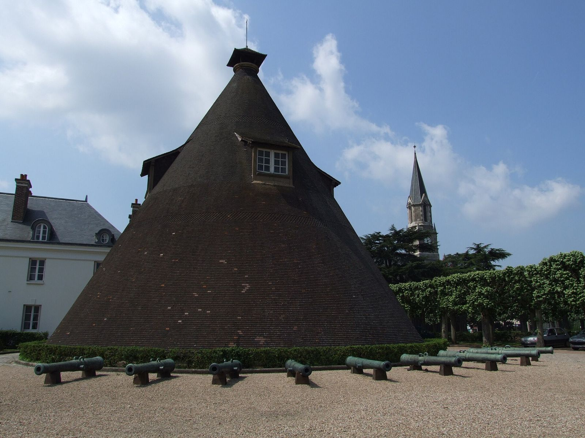

Accueil · La région
La Bourgogne du Sud, autour du domaine
Les vignes de la Côte chalonnaise, les abbayes romanes et le canal du Centre, à moins d’une heure.
La Côte chalonnaise, à 30 minutes
Givry, Mercurey, Rully : les vignes commencent à une demi-heure du domaine. Les caves ouvrent leurs portes pour une visite et une dégustation, avant le retour au spa.

L’abbaye de Cluny, à 45 minutes
Ce qu’il reste de la plus grande église de la chrétienté avant Saint-Pierre de Rome, les haras nationaux et les ruelles de la ville médiévale.

Beaune et ses Hospices, à 50 minutes
Les toits vernissés de l’Hôtel-Dieu, les caves et la route des Grands Crus, pour une journée en Côte-d’Or.

Le canal du Centre, à 7 minutes
Ses écluses et sa voie verte se parcourent à vélo, de Chalon-sur-Saône à Paray-le-Monial. Le domaine est labellisé Accueil Vélo.

Paray-le-Monial, à 40 minutes
La basilique du Sacré-Cœur, chef-d’œuvre de l’art roman au bord de la Bourbince, puis la campagne du Charolais.

Chalon-sur-Saône, à 30 minutes
Les quais de la Saône, l’île Saint-Laurent et le musée Niépce, dans la ville où est née la photographie.

Mont-Saint-Vincent, à 20 minutes
Le village perché et son église romane, d’où l’on voit loin sur la campagne bourguignonne.

Le Creusot, à 17 minutes
Le château de la Verrerie et ses fours en cône, l’écomusée et le parc, pour une sortie en famille.

Le soir, retour au spa
Après une journée de visites ou de dégustations, votre spa vous attend, chauffé entre 35 et 40 °C.
Vos dates, en direct
Choisissez vos dates sur le planning : vous voyez tout de suite ce qui est libre et le prix de votre séjour, taxe de séjour comprise, sans frais de plateforme.
Une surprise à préparer ? Écrivez à Sandra
- 1Vos datesle planning est à jour, les dates prises sont fermées
- 2Votre hébergementla Suite, la Cachette ou le Lodge
- 3Vos optionsle spa, un départ tardif
- 4Vos coordonnéesla demande arrive chez Sandra
Avant de réserver
Comment réserver ?
En ligne, avec le bouton « Réserver » : vous choisissez vos dates sur le planning, votre hébergement et vos options (spa, départ tardif). Le prix du séjour s’affiche aussitôt, taxe de séjour comprise. Vous pouvez aussi appeler Sandra au 06 16 02 31 24.
Le spa est-il compris ?
Dans la Suite Spa, oui : la baignoire spa XXL et le sauna sont dans la suite. À la Cachette et au Lodge, le spa de la terrasse est en option, 50 € la nuit, chauffé entre 35 et 40 °C toute l’année : réservez-le à l’avance pour qu’il soit prêt à votre arrivée.
À quelle heure arrive-t-on ?
L’arrivée est autonome à partir de 17 h : la procédure pour récupérer les clés vous est envoyée le jour de votre arrivée. Le départ se fait à 11 h (10 h au Lodge). Un départ tardif jusqu’à 14 h est possible pour 50 €.
Peut-on venir avec les enfants ?
Oui, à la Cachette (2 adultes et 2 enfants) et au Lodge (jusqu’à 8, avec un lit camion de pompier et un lit bébé). La Suite Spa est réservée aux couples. Les enfants adorent la mini-ferme et la zone de jeux des dépendances.
Peut-on prendre le petit déjeuner sur place ?
Oui, sur demande et en supplément : il est servi directement dans votre logement. Des formules dîner, des massages et des décorations sur mesure (pétales de roses, champagne, ballons) sont aussi proposés.
Les animaux de compagnie sont-ils admis ?
Pas dans les hébergements du domaine, qui sont aussi non-fumeurs. Nos annexes du Creusot et de Montchanin, elles, accueillent les animaux : appelez-nous pour en parler.
Peut-on offrir un séjour ?
Oui : la carte cadeau numérique est envoyée gratuitement par e-mail, la carte artisanale par courrier pour 5 €. Le coffret cadeau comprend le logement et les options choisies, avec ou sans dates ; le chèque cadeau a le montant de votre choix.